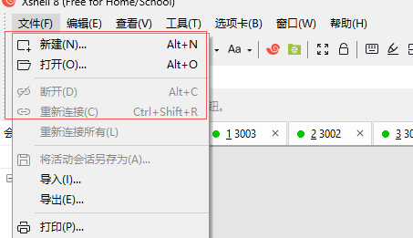
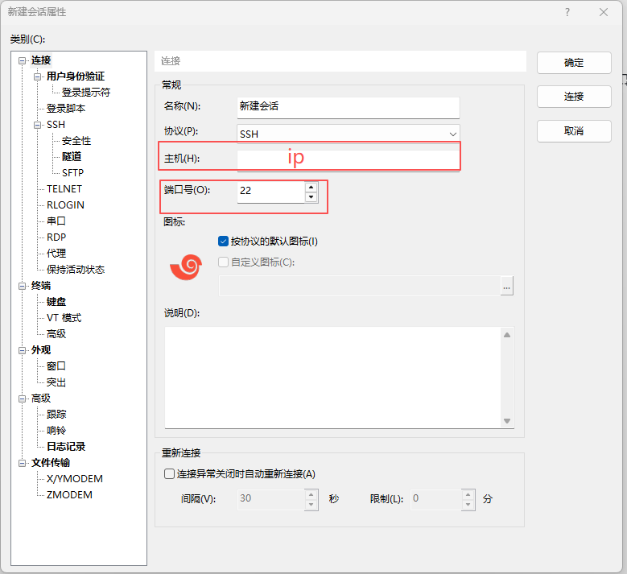
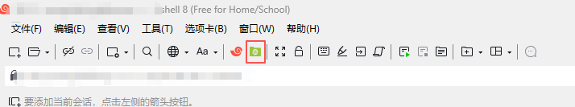

前置准备
连接服务器需要准备以下信息：
- 服务器 IP 地址
- 端口号（通常为 22）
- 用户名
- 密码
所需软件
推荐使用以下软件连接服务器：
- XShell - 终端模拟器
- Xftp - 文件传输工具
注意：Windows 的 cmd 或 PowerShell 也可以直接连接。
XShell 连接步骤
在 XShell 中新建会话，填写服务器信息后点击连接。系统会提示输入用户名和密码，验证通过后即可登录。


登录后可以从 XShell 菜单栏直接打开 Xftp 进行文件传输，也可以在 Xftp 中直接新建连接。

使用 VSCode 连接
步骤 1：安装插件
在 VSCode 中安装 Remote - SSH 扩展插件。
步骤 2：配置 SSH Config 文件
确保电脑已安装 SSH，找到配置文件地址：C:\Users\Administrator\.ssh\config
步骤 3：编辑 Config 文件
添加以下配置内容：
Host my-server
HostName 服务器IP地址
Port 端口号
User 用户名
Host another-server
HostName 另一个服务器IP
Port 端口号
User 用户名步骤 4：连接服务器
配置完成后，点击 VSCode 左下角的连接按钮，选择对应的 SSH 目标即可连接。
免密码配置（可选）
如果不想每次连接都输入密码，可以配置 SSH 公钥认证：
- 在本机生成 SSH 密钥对
- 将公钥内容添加到服务器的
~/.ssh/authorized_keys文件中 - 注意修改
authorized_keys文件权限为 600
提示：首次连接时系统会询问是否信任该主机密钥，输入 yes 即可。